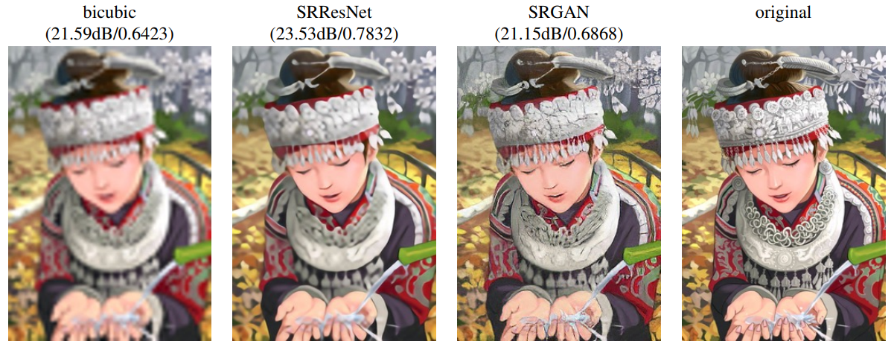

Réseaux antagonistes génératifs (GAN)#
Les GAN (Generative Adversarial Networks) sont une famille de modèles génératifs. Comme leur nom l’indique, ces modèles sont non supervisés, c’est-à-dire qu’ils n’ont pas besoin de labels pendant l’entraînement. Les GAN utilisent une astuce pour transformer ce problème non supervisé en un problème supervisé.
Principe de base des GAN#
Deux modèles qui s’affrontent#
Le principe de base des GAN repose sur l’utilisation de deux réseaux de neurones qui s’entraînent de manière concurrente.
Le générateur : Son rôle est de créer des exemples similaires à ceux des données d’entraînement. Il prend en entrée un vecteur aléatoire (issu d’une distribution gaussienne) et génère un exemple à partir de cette entrée.
Le discriminateur : Son rôle est de classifier un exemple comme réel (issu des données d’entraînement) ou faux (généré par le générateur). C’est un simple classifieur, comme ceux vus précédemment.
Un jeu à somme nulle#
Ces modèles s’entraînent de manière concurrente dans ce qu’on appelle un jeu à somme nulle. L’objectif est que le discriminateur ne puisse pas déterminer si un exemple est réel ou généré (il renvoie une probabilité de \(\frac{1}{2}\) pour chaque élément). Cela signifie que le générateur est capable de créer des exemples plausibles. Dans ce cas, le générateur a appris la distribution de probabilité des données d’entraînement.
Pendant l’entraînement, le générateur crée un lot d’exemples qu’on mélange avec des exemples réels (issus des données d’entraînement). Ces exemples sont ensuite donnés au discriminateur pour classification. Le discriminateur est mis à jour par descente de gradient en fonction de sa performance. Le générateur est mis à jour en fonction de sa capacité à tromper le discriminateur.
On peut comparer le générateur à un faussaire et le discriminateur à la police. Le faussaire cherche à tromper la police en créant des faux billets parfaits, tandis que la police développe de nouvelles techniques pour détecter les faux billets. Ainsi, les deux progressent ensemble. Personnellement, je trouve que l’idée derrière les GAN peut s’appliquer à de nombreuses situations de la vie réelle. On donne souvent le meilleur de nous-même dans l’adversité.
Note : En général, lors de l’entraînement d’un GAN, on s’intéresse principalement au générateur. Le discriminateur n’est utilisé que pour l’entraînement. Cependant, comme il y a beaucoup plus d’images non supervisées (presque toutes les images disponibles sur internet) que d’images avec labels, il peut être intéressant d’entraîner un GAN sur un grand nombre d’images et d’utiliser le discriminateur et le générateur comme modèles pré-entraînés pour d’autres tâches.
Architecture des GAN#
La plupart des GAN sont des réseaux de neurones convolutifs, et ce pour plusieurs raisons. D’une part, il est facile pour un humain d’évaluer la qualité d’une image générée, ce qui permet une évaluation directe et intuitive des performances du modèle. D’autre part, les GAN ont montré des performances impressionnantes pour la génération d’images, mais moins pour d’autres tâches comme la génération de texte.
L’architecture de la plupart des GAN est basée sur le papier DCGAN.
Note : Les GAN ont été inventés avant les architectures transformer. Récemment, des architectures de type GAN ont été proposées avec un transformer à la place du CNN.
Note 2 : Il y a un aspect théorique important derrière les GAN, mais nous n’allons pas entrer dans les détails dans ce cours. Pour en apprendre plus, vous pouvez vous référer au cours CS236 de Stanford et en particulier à ce lien.
GAN conditionnels#
L’architecture que nous avons vue permet de générer une image réaliste à partir d’un vecteur aléatoire issu d’une distribution gaussienne. Cependant, nous n’avons aucun contrôle sur l’image générée. Si on entraîne le modèle sur des images de personnes, il génère une personne avec des attributs aléatoires (sexe, yeux, cheveux, peau, etc.). Cela n’est pas très pratique, car dans de nombreux cas, on cherche à générer une image spécifique et pas seulement une image réaliste aléatoire.
Pour résoudre ce problème, on peut utiliser un GAN conditionnel (conditional GAN), qui reprend l’architecture classique du GAN mais en ajoutant une information sur les données en entrée du générateur et du discriminateur.

Figure extraite du blogpost
Ainsi, on peut diriger la génération à l’aide d’un label, ce qui permet de générer des images contenant des attributs spécifiques.
Problèmes des GAN#
L’architecture des GAN est une excellente idée et fonctionne très bien en pratique lorsque le modèle est bien entraîné. Dans les cours précédents, nous avons insisté sur la difficulté à entraîner un modèle de deep learning et avons présenté de nombreuses techniques pour faciliter l’entraînement. Ici, nous avons deux modèles à entraîner en même temps et de manière antagoniste. C’est là le principal problème des GAN : en pratique, ils sont très compliqués à entraîner.
Effondrement de mode#
Le principal problème qui fait frissonner les utilisateurs de GAN est l’effondrement de mode. Cela se produit lorsque le générateur apprend à produire une variété limitée de résultats souvent très similaires. Dans ce cas, le générateur n’a pas réussi à capturer la diversité des données d’entraînement, mais parvient quand même à tromper le discriminateur systématiquement. On peut imaginer que le générateur a appris à générer une image parfaite, mais qu’il ne peut générer que cette image.
Ce problème découle directement de l’objectif d’entraînement du GAN et il est très difficile à gérer.
Équilibre entre générateur et discriminateur#
Pendant l’entraînement, on souhaite que le générateur et le discriminateur progressent ensemble. Cependant, il peut arriver qu’un des deux modèles progresse plus rapidement que l’autre, ce qui peut causer des comportements chaotiques pendant l’entraînement.
Il y a aussi d’autres problèmes à mentionner :
Problème de convergence : Le modèle peut avoir du mal à converger vers une solution stable, même après un long entraînement.
Choix de l’architecture des réseaux : Il faut choisir une architecture cohérente pour le générateur et le discriminateur.
Quelques stratégies peuvent être utilisées pour limiter ces problèmes, mais ce n’est pas magique. Pour stabiliser l’entraînement, on peut utiliser un Wasserstein GAN ou/et un entraînement plus progressif.
Exemples d’utilisation des GAN#
GAN pour la super résolution#
Il est possible d’utiliser les GAN pour la super-résolution, c’est-à-dire pour augmenter la résolution d’une image. Le papier Photo-Realistic Single Image Super-Resolution Using a Generative Adversarial Network propose une architecture de GAN permettant cela.

GAN pour l’augmentation de données#
L’augmentation de données consiste à augmenter artificiellement les données d’entraînement via diverses techniques. Si ce n’est pas déjà fait, vous pouvez suivre le cours bonus sur l’augmentation de données.
En y réfléchissant, l’augmentation de données de base (recadrage, rotation, etc.) peut être vue comme une sorte de modélisation générative où l’on génère des images d’entraînement proches de la distribution des images normales.
En partant de cette considération, il est assez évident de voir comment un GAN peut nous aider pour l’augmentation de données. Si on veut classifier les chats, notre GAN peut nous générer des images de chats en quantité.
Traduction d’image à image#
Une autre utilisation courante des GAN est la traduction d’image à image, introduite dans le papier Image-to-Image Translation with Conditional Adversarial Networks. Cela permet de convertir une image d’un domaine source vers un domaine cible tout en conservant les correspondances structurelles et contextuelles (selon l’entraînement).

Note : On peut aussi utiliser la traduction d’image à image pour l’augmentation de données. Supposons que l’on génère des fausses données à l’aide d’un logiciel de jeux vidéo comme Unity et que l’on souhaite rendre ces images réalistes. Il suffit alors d’entraîner un GAN de transfert de style permettant de passer d’une image à une autre.